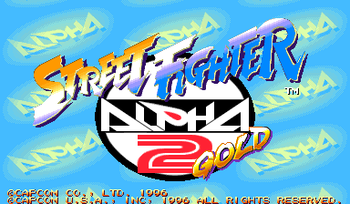
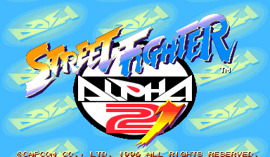
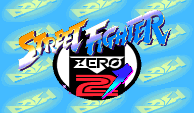
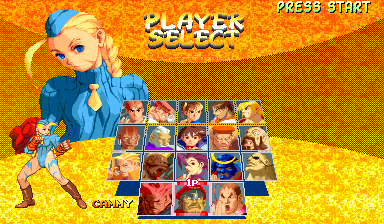
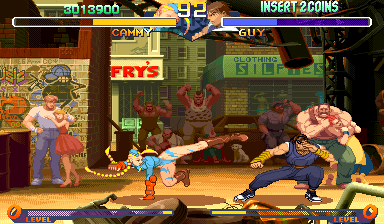

Street Fighter Alpha 2 Gold
Zero 2 Dash, rebuilt for CPS-2 hardware
The four builds

USA ·
sfa2g
Europe ·
sfa2d
Japan ·
sfz2dAsia (English) ·
sfz2daAbout
Street Fighter Alpha 2 Gold, known as Zero 2 Dash in Japan, was the console revision of Alpha 2 that added Cammy as a playable fighter, first on PlayStation and Saturn and in final form in Capcom's 2006 PlayStation 2 anthology. It was never released on arcade hardware. This project rebuilds the anthology's edition as a real CPS-2 game.
It is a faithful reconstruction, not a remix. It starts from the original arcade Zero 2 Alpha program and restores the anthology's changes piece by piece: Cammy, her graphics, the audio, and the endings, each one checked against the PlayStation 2 original. Four regional builds are provided, shown below.
This is a release candidate. All four builds are complete and verified against the reference. The 4 MB builds have been run and accepted in MAME, and the 8 MB builds are verified by content and checksum.
What's included
- Cammy restored as a playable fighter, with her graphics, palettes, voice, sound effects, win poses, and ending
- The revised title, presentation, and staff-credit screens for each region
- Four regional builds: USA (Alpha 2 Gold), Europe (Alpha 2 Dash), Japan (Zero 2 Dash), and an English Asia (Zero 2 Dash)
- 4 MB builds for real hardware and stock MAME, plus 8 MB builds carrying Cammy's full audio for HBMAME and MiSTer
Cammy in action


How it's distributed
Each build is put together on your own machine from files you already own. You need:
- your own PlayStation 2 anthology disc image: Street Fighter Alpha Anthology, or Street Fighter Zero — Fighter's Generation for the Japan set
- your own arcade Street Fighter Zero 2 Alpha romset: sfz2al, plus sfz2alj for the Japan set
A small tool reads the revised game from your PlayStation 2 disc image, combines it with your arcade Zero 2 Alpha romset, and writes out the finished CPS-2 build.
Two sizes of each build are produced. A 4 MB set stays within
original CPS-2 limits and runs on real hardware and stock MAME. An 8 MB
set carries Cammy's complete voice and sound-effect audio, more than an original board
could hold, for HBMAME and MiSTer (Jotego's jtcps2 core).
The builds
| Region | Title | HBMAME / MiSTer (8 MB) | Hardware / MAME (4 MB) |
|---|---|---|---|
| USA | Street Fighter Alpha 2 Gold (060613) | sfa2g | sfz2al |
| Europe | Street Fighter Alpha 2 Dash (060707) | sfa2d | sfz2al |
| Japan | Street Fighter Zero 2 Dash (060525) | sfz2d | sfz2alj |
| Asia (English) | Street Fighter Zero 2 Dash (060525) | sfz2da | sfz2al |
Download
The kit is our reconstruction code and a short list of byte patches. Everything else is rebuilt on your machine from files you already own.
What you supply
- your own PlayStation 2 anthology disc image: Street Fighter Alpha Anthology, or Street Fighter Zero — Fighter's Generation for the Japan set
- your own arcade Street Fighter Zero 2 Alpha romset: sfz2al, plus sfz2alj for the Japan set
How to build
unzip sfa2-gold-rc2-kit.zip -d sfa2-gold
cd sfa2-gold
python3 apply.py --iso "Street Fighter Alpha Anthology.iso" \
--romset sfz2al.zip --region us --out-dir outRelease history
rc2 (2026-08-27)
- Fixed a sprite corruption that appeared during the attract sequence.
- Polish improvements to the title screens across all four regions.
- All four builds are rebuilt and set checksums have changed, so rebuild your sets with the rc2 kit.
rc1 (2026-08-25)
- First public release.
Related projects
- CPS+, pair these sets with the arranged Saturn soundtrack on MiSTer, using the Gold Arrange MRAs in the CPS+ kit, which load them directly
Notes
- The 8 MB builds hold more QSound audio than an original CPS-2 board supports, so they run only on HBMAME and MiSTer, not real hardware.
- This is a fan reconstruction, unaffiliated with Capcom. The kit ships no code or data from the anthology or the arcade game. The sets are built from discs and roms you already own.